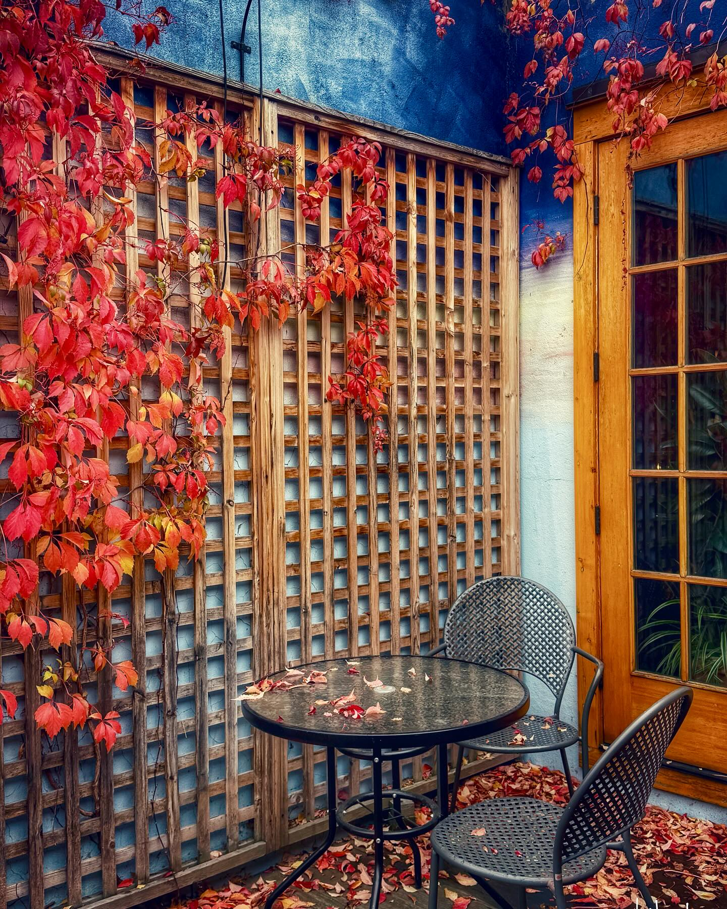

01 / VOTRE PAUSE DU JOUR
Prenez le temps d’un café.
Commencez la matinée ou faites une pause pendant votre promenade au centre-ville. Venez découvrir le café du jour.
 bean sceneCOFFEE HOUSE · VERNON, BC
bean sceneCOFFEE HOUSE · VERNON, BCVOTRE CAFÉ AU CENTRE-VILLE DE VERNON
Une petite pause. Un visage familier. Un endroit où se sentir chez soi, au cœur de Vernon.
2923 — 30th AvenueDowntown Vernon, British Columbia

 2923 / 30TH AVENUE
2923 / 30TH AVENUEUN LIEU OÙ SE RETROUVER
Certains lieux invitent à ralentir. Retrouver un ami, prendre un moment pour soi ou laisser une conversation se prolonger au-delà du café. C’est l’esprit de Bean Scene.
Entrez depuis le centre-ville de Vernon et découvrez un lieu plein de caractère, de sa façade colorée à sa cour verdoyante.
Préparer votre visiteSAVOURER LE MOMENT
01 / VOTRE PAUSE DU JOUR
Commencez la matinée ou faites une pause pendant votre promenade au centre-ville. Venez découvrir le café du jour.
02 / UN PETIT COIN CACHÉ
Installez-vous dans la cour et laissez la journée suivre un rythme plus doux.
03 / LA VIE LOCALE
Retrouvez nos prochains événements et les dernières nouvelles de Bean Scene sur Facebook.
LA VIE CHEZ BEAN SCENE
Chez nous, il n’y a pas que le café. Suivez nos dernières nouvelles et nos prochains événements sur Facebook.
Voir nos nouvelles sur Facebook
RENDEZ-VOUS SUR LA 30e

HORAIRES D’OUVERTURE
Les horaires peuvent varier les jours fériés. Appelez-nous avant de faire un déplacement spécial.